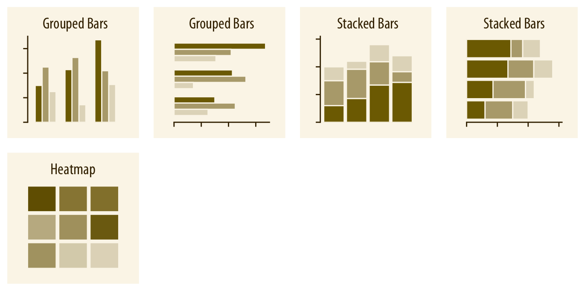
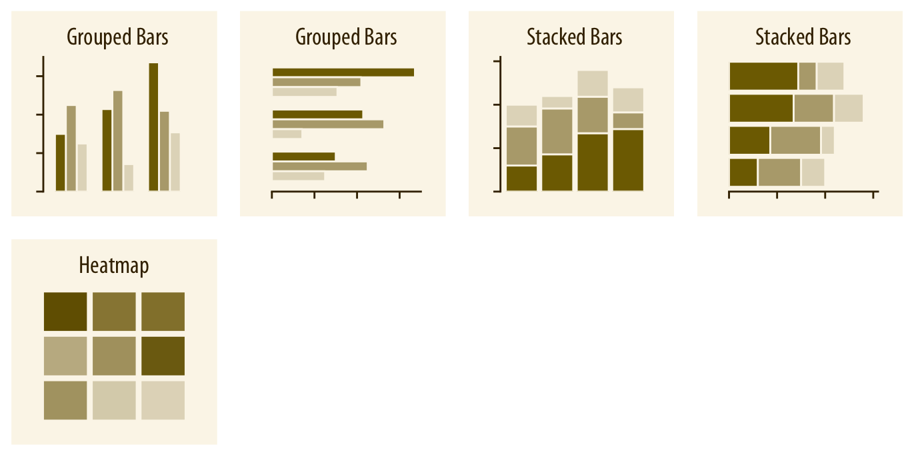
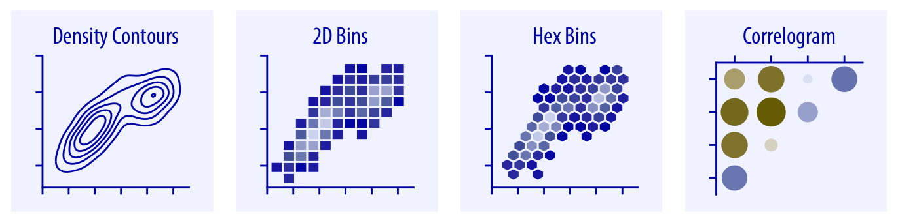
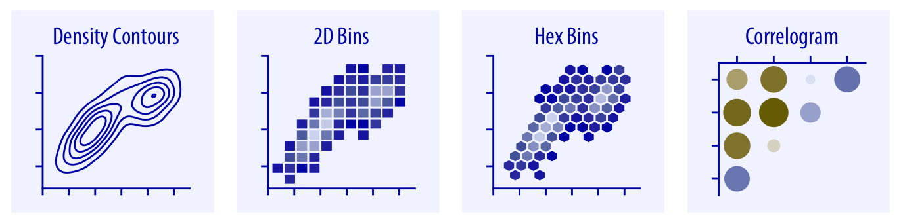

Ciencia de Datos y Visualización
[Charlas: COVID-19 Médicos, UPCH]
Jesús M. Castagnetto, Ph.D.
(Universidad de Lima)
2020/07/20
El camino de la Ciencia de Datos
Fuente: http://nirvacana.com/thoughts/2013/07/08/becoming-a-data-scientist/

Ejemplo: Clasificación de Pingüinos de Palmer
- Tres especies: Adelie, Chinstrap y Gentoo
- Datos sobre:
- Longitud y ancho del pico (en mm)
- Longitud de la aleta (en mm)
- Peso corporal (en gr)
- Sexo (female, male)
- También: Isla y año del registro

Las tres especies de pingüinos

Características de una visualización
- Mapear datos a los aspectos de un gráfico:
- Posición, forma, tamaño, color, grosor y tipo de líneas

Fuente: https://serialmentor.com/dataviz/aesthetic-mapping.html
Visualizar cantidades
 

Fuente: https://serialmentor.com/dataviz/directory-of-visualizations.html
Visualizar distribuciones


Fuente: https://serialmentor.com/dataviz/directory-of-visualizations.html
Visualizar proporciones


Fuente: https://serialmentor.com/dataviz/directory-of-visualizations.html
Visualizar relacionex “x-y”
 
  Fuente: https://serialmentor.com/dataviz/directory-of-visualizations.html
Fuente: https://serialmentor.com/dataviz/directory-of-visualizations.html
Visualizar datos geoespaciales

Fuente: https://serialmentor.com/dataviz/directory-of-visualizations.html
Visualizar Incertidumbre


Fuente: https://serialmentor.com/dataviz/directory-of-visualizations.html
Pero en realidad, no lo son
Mostrar los datos es importante

No abusemos de la regresión lineal

Fuente: https://xkcd.com/1725/ (“Linear regression”)
Y tengamos cuidado con correlaciones sin sentido

Lo bueno, lo malo, lo feo y lo errado

Un ‚Äúpie chart‚Äù ininteligible üëé

Fuente: http://livingqlikview.com/the-9-worst-data-visualizations-ever-created/
Usar 3D en forma innecesaria üëé

Fuente: https://socviz.co/
El cambio en casos en las últimas dos semanas üëç

Equipo de protección personal COVID-19